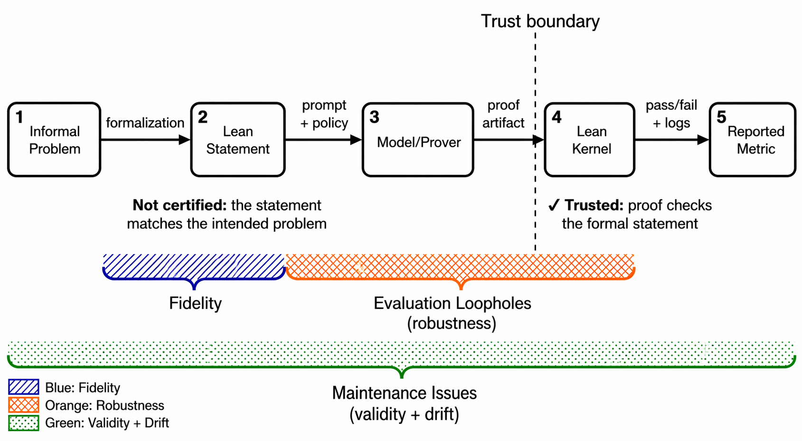

Audits five Lean theorem-proving benchmarks with corpus-scale static checkers implemented as Lean 4 metaprograms.
Abstract
Benchmarks for LLM-assisted theorem proving in Lean are often treated as intrinsically reliable because every solved instance comes with a machine-checked proof. However, the kernel only checks that a proof establishes a \emph{formal} statement; it does not verify that the statement faithfully encodes the intended informal problem, nor that evaluation harnesses are robust to trivial or adversarial solutions. We audit five widely used Lean theorem-proving benchmarks and their forks, using corpus-scale static checkers to surface 4,833 findings, including 398 mechanically certified issues such as counterexamples, vacuous theorems, and unsound axioms. We also document semantic defects such as missing hypotheses, problem simplification, incomplete or incorrect translations, and Lean-specific specification hazards. Beyond dataset construction, we survey evaluation-time failure modes and show, on corrected subsets, that defects can both inflate and deflate reported prover scores. We propose a fault taxonomy, a suite of automated checkers and recall-oriented semantic audit prompts, and release standards to guide the creation of formal math datasets and to make evaluation more reproducible and trustworthy. Our checkers, audit prompts, and corrected dataset snapshots are available at https://github.com/Shashi456/atp-checkers.
Problem
Lean theorem-proving benchmarks are treated as intrinsically reliable because solutions are machine-checked, but the kernel only verifies that a proof establishes the formal statement, not that the statement faithfully encodes the intended problem or that evaluation harnesses are robust.
Approach
The authors audit five widely used Lean benchmarks (miniF2F, ProofNet, FormalMath, CombiBench, ProverBench) and their forks using corpus-scale static checkers implemented as Lean 4 metaprograms. They also deploy LLM-based semantic auditors and develop a fault taxonomy separating fidelity issues, evaluation loopholes, and maintenance decay.

Figure 1 : The formal benchmarking pipeline and where errors can enter. The kernel (trust boundary) certifies only that a proof artifact establishes the formal Lean statement. Three categories of issues arise: Fidelity Issues in the translation step, Evaluation Loopholes (robustness) in the proof-checking and reporting steps, and Maintenance Issues (validity + drift) spanning the entire pipeline.
Results
The audit surfaced 4,833 findings across 10,318 problems, including 398 mechanically certified issues (counterexamples, vacuous theorems, unsound axioms). On corrected subsets, defects both inflate and deflate reported prover scores. The authors release checkers, audit prompts, and corrected dataset snapshots.